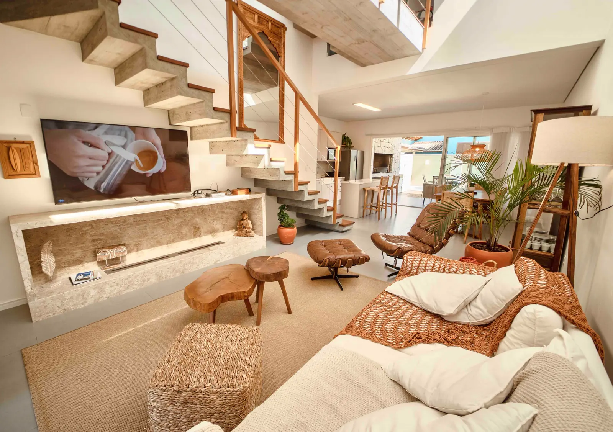
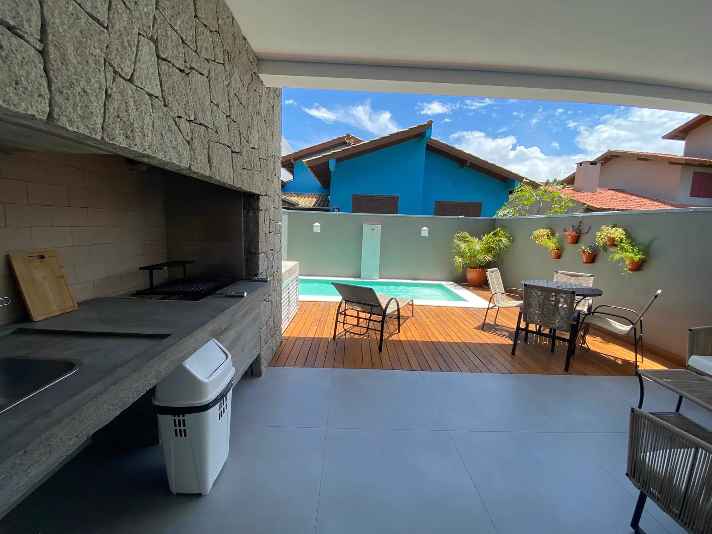
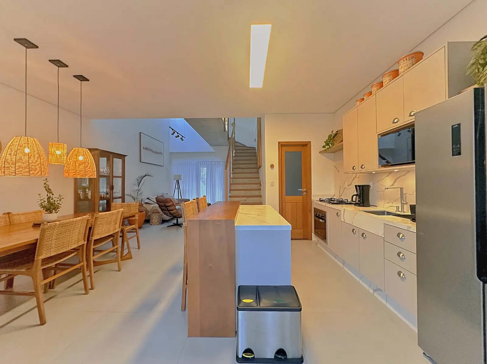
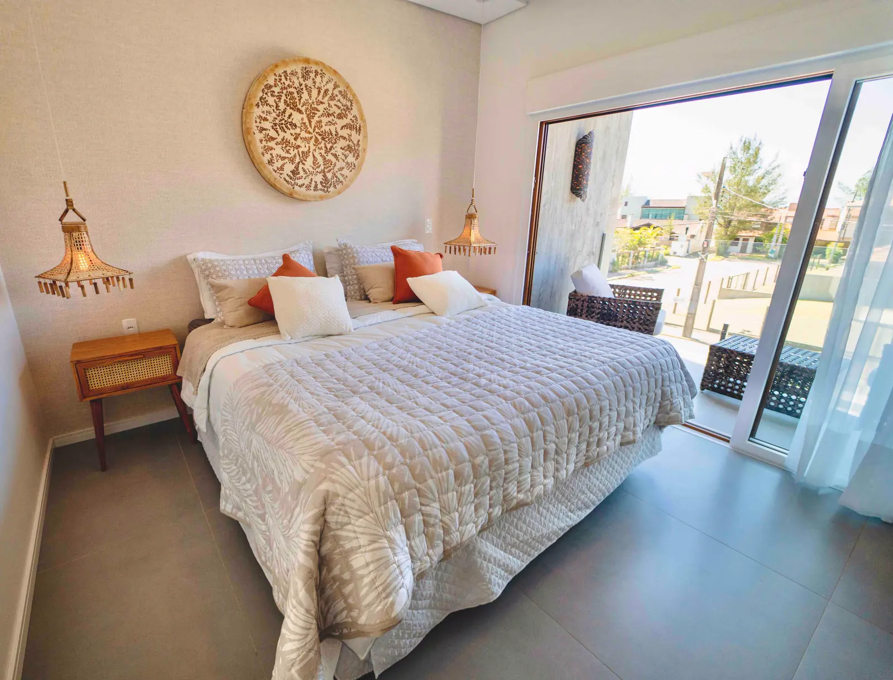
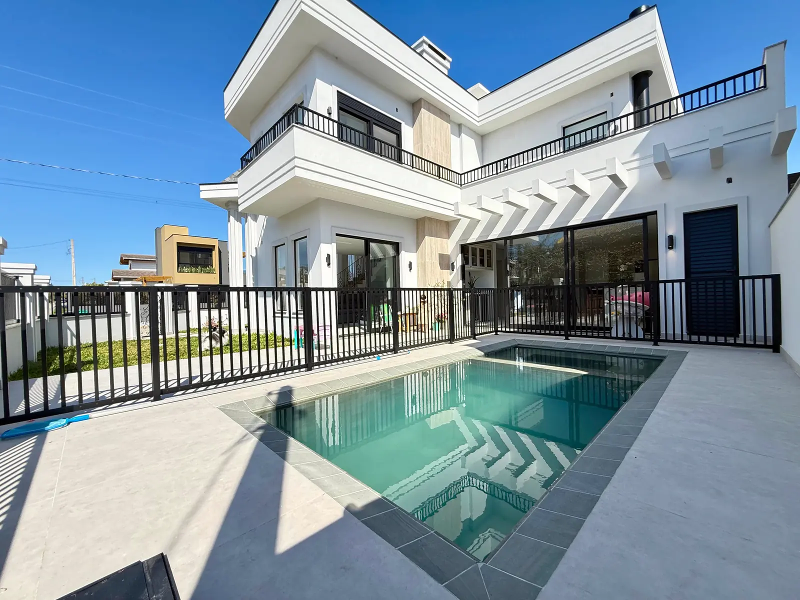

Casa Amendoeiras
Um lugar para chegar, respirar e ficar.
Um lugar para chegar, respirar e ficar.
Com aproximadamente 175 m², a Casa Amendoeiras foi pensada para proporcionar conforto em todos os momentos da estadia. São três suítes completas, ambientes integrados, piscina, churrasqueira, terraço e espaços para aproveitar a casa tanto quanto os encantos de Garopaba.
Algumas viagens ficam na memória pelos detalhes. Pelo café sem pressa, pela conversa que se estendeu, pelo sol entrando pela janela ou simplesmente por aquela sensação de estar exatamente onde você gostaria de estar.
Conheça cada ambiente.
Detalhes da estadia.
Ambientes que convidam a ficar.
No piso inferior, sala de estar, sala de jantar e cozinha se encontram em um ambiente integrado. Um espaço pensado para cozinhar, conversar, reunir a família e aproveitar os momentos juntos.
A lareira acrescenta aquele toque especial para os dias mais tranquilos, enquanto a conexão entre os ambientes deixa a casa ainda mais acolhedora.
- Ar-condicionado na sala
- Ambiente integrado
- Conforto em todas as estações
- Lareira
Dias de sol pedem uma piscina.
Nos fundos da casa, a piscina e a churrasqueira criam um espaço perfeito para aproveitar os dias de verão, reunir a família e deixar o relógio um pouco de lado.
Nascer do solO dia começa diferente daqui.
No terraço, entre o mar e as montanhas de Garopaba, as cadeiras convidam a sentar, contemplar o nascer do sol e simplesmente aproveitar o momento.
Três suítes. Mais privacidade.
No segundo piso, três suítes completas com ar-condicionado, TV 50" e ambientes preparados para oferecer conforto e privacidade depois de um dia aproveitando Garopaba.
- Suíte 01 · TV 50" · Ar-condicionado · Varanda
- Suíte 02 · TV 50" · Ar-condicionado
- Suíte 03 · TV 50" · Ar-condicionado
- Três suítes completas
Porque as melhores férias são para todo mundo.
A Casa Amendoeiras também reserva espaço para as crianças. Jogos, brincadeiras e livros para pintar ajudam a criar aqueles momentos simples que acabam sendo lembrados muito depois da viagem.
Pequenos detalhesUma casa com histórias em cada canto.
A cristaleira e os detalhes da decoração ajudam a criar uma atmosfera acolhedora, onde cada ambiente tem seu próprio jeito de receber.
A poucos passos do mar.
A Casa Amendoeiras fica a poucos passos do mar, para que a praia faça parte da rotina da sua estadia. É só sair de casa e caminhar até a areia, seja para um mergulho logo cedo, uma caminhada no fim da tarde ou para ver o dia terminar.
- Praias
- Trilhas
- Natureza
- Restaurantes
Mais lugares no litoral catarinense.
 Garopaba · Santa Catarina
Garopaba · Santa CatarinaEstilo e Conforto
Ver acomodação Garopaba · Santa Catarina
Garopaba · Santa CatarinaCasa Ferraz
Ver acomodação
Garopaba · Santa Catarina